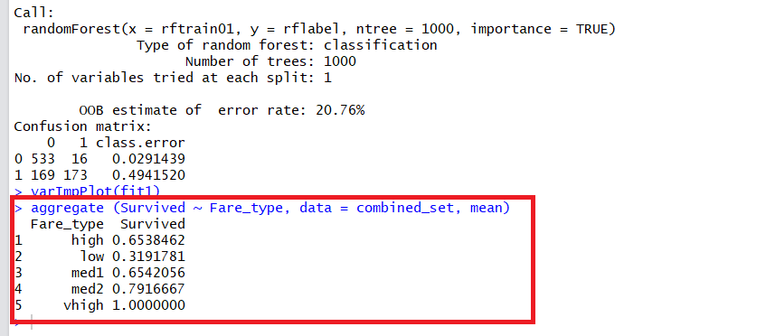
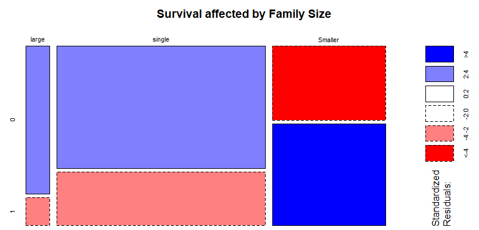
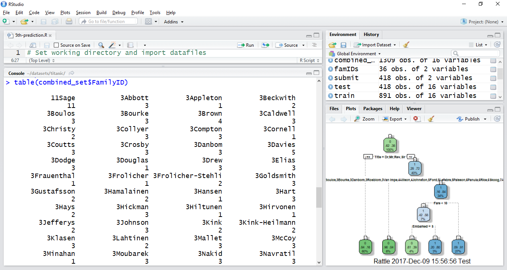
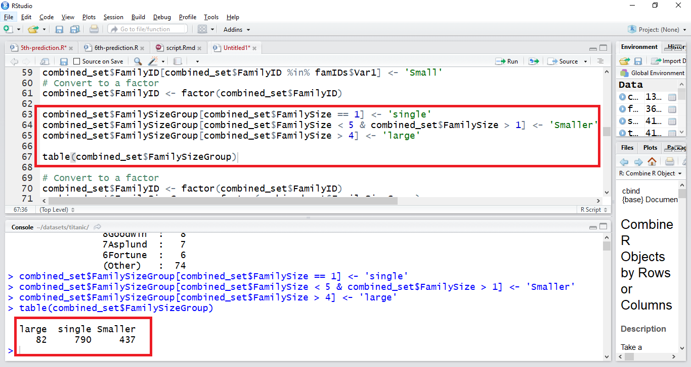
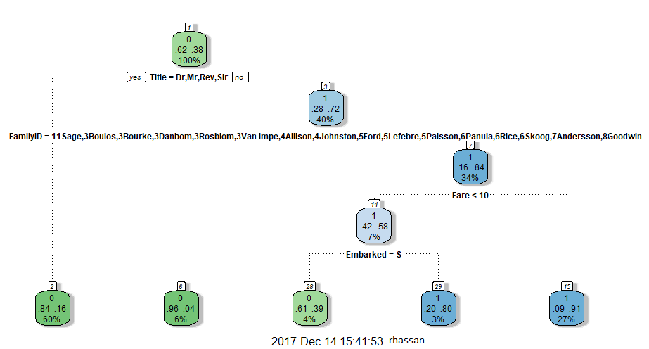
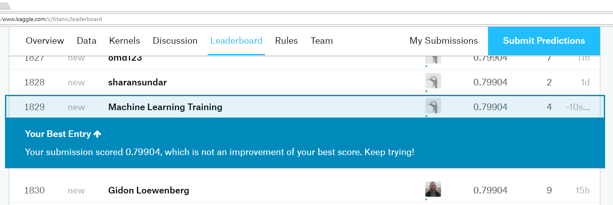

৭.৭. পঞ্চম প্রেডিকশন (ফিচার ইঞ্জিনিয়ারিং)¶
পঞ্চম প্রেডিকশন (ফিচার ইঞ্জিনিয়ারিং)¶
[Captain Eldad] paused, wiping away with his sleeve the salt tears which the simple epic of a brave man's death brought to his eyes. "That was the story, and them was the last words Timbs brought home to your mother ... An' that's the way he died. Women and children saved. That's a comfort...But he died...
"It was a manly way to leave the world," [John Harrington] said. "Life is sweet to me with the memory of such a father."
— William Douglas O'Connor, Harrington: A Story of True Love (1860)
| প্রেডিকশনের প্রতিটা চ্যাপ্টারের পেছনে আমাদের ফাইলের গিটহাবের লিংক আছে, ডাউনলোড করে নিন আগে। চাইলে পুরো প্রেডিকশন এক্সারসাইজ পাওয়া যাবে জিপ ফরম্যাটে ওই একই লিংকের হোমপেজ থেকে। |
|---|
| আমার প্রিয় চ্যাপ্টার |
|---|
এখন আমরা আলাপ করবো মেশিন লার্নিং এর সবচেয়ে গুরুত্বপূর্ণ ব্যাপারটা নিয়ে। জিনিসটার নাম “ফিচার ইঞ্জিনিয়ারিং”। আমার মতে - এই জিনিসটাই শুধুমাত্র মানুষের সাথে কানেক্টেড, বিশেষ করে আমাদের মেশিন লার্নিং এর ক্ষেত্রে। আর, এখানেই দরকার মানুষের মুন্সিয়ানা। মানুষ কোথায় এখনো সুপেরিয়র - সেটা আসবে এই ফীচার ইঞ্জিনিয়ারিংয়ে। মানুষের ইনটিউশনকে কাজে লাগাবো এখানে। ডাটার মধ্যে মানুষই ঠিক বের করতে পারবে কোন জিনিসটা ক্লিক করবে। বের করে নিয়ে আসবে ডাটার এমন কিছু ফীচার - যা এগিয়ে দেবে আমাদের তুখোড় প্রেডিকশন মডেল। এই হিউমান এলিমেন্টের কারণেই একটা মেশিন লার্নিং মডেল হতে পারে অজেয়। আগেই বলেছি - মানুষতো আর যন্ত্র নয়, সে কারণে মানুষের ভেতরের ‘ইনটুইশন’ নিয়ে কাজ করব এই ফিচারে ইঞ্জিনিয়ারিং এ। আপনারাই বলবেন কোন ফীচারটা এই মডেলের জন্য জরুরি। ডাটা হয়তোবা বলবে একটা জিনিস - তবে আসল সিদ্ধান্ত নেবে মানুষ।
ভালো কথা - তাহলে “ফিচার ইঞ্জিনিয়ারিং” ব্যাপারটা কি? আচ্ছা, মনে আছে আমাদের দেয়া ভ্যারিয়েবলগুলোর কথা? মানে যা এসেছে ডাটার সাথে। অনেকে বলবেন - সেটাতো দেবার জন্য দেয়া। তাহলে আমরা কি করলাম? আপনার তো মনে হতে পারে ওই ভ্যারিয়েবলগুলো ছাড়াও অনেক জিনিস এখানে মিসিং? অনেক ধারণা কিন্তু আসবে না শুধুমাত্র ওই ভ্যারিয়েবল থেকে। আমাদেরকেও তৈরী করে নিতে হবে কিছু। দুই তিনটা ভ্যারিয়েবলকে একসাথে মিশিয়ে। মানে ঘুঁটা দিয়ে। সেখানেই কাজ করবে আমাদের ইনটুইশন। মনে আছে - আমাদের “ডিসিশন ট্রি” এর জন্য ব্যবহার করতে হয়েছিল সাত সাতটা ভেরিয়েবল। ১২টার মধ্যে। বাকিগুলো আমাদের কাছে সে ধরনের আবেদন ফেলতে পারেনি বলে সেগুলোকে ব্যবহার করিনি ওই মুহুর্তে। ফিরে যাই আমাদের ডাটাতে। মনে আছে কি দিয়ে শুরু হয়েছিলো আমাদের ট্রেনিং ডাটাসেট? ঠিক তাই। জিনিসটা শুরু হয়েছে মানুষের নাম দিয়ে। তো কি হবে মানুষের নাম দিয়ে? আচ্ছা বলুনতো সত্যি করে, মানুষের নাম দিয়ে আপনি কি তার মৃত্যুর প্রেডিকশন করতে পারবেন? একদম না। এটা একটা অসম্ভব ব্যাপার। মৃত্যুর কাছে মানুষের নামে কি আসে যায়? আসলেই তাই। আমি নিজেও ধারনা করতে পারিনি নাম দিয়ে মৃত্যুর প্রেডিকশন সম্ভব। পরে দেখা গেল, ব্যাপারটার সম্ভব। তবে সেটা করবো “ফীচার ইঞ্জিনিয়ারিং” দিয়ে।
| মেশিন লার্নিং নিয়ে কোন ভুল বা ঠিক নেই। আপনি যা করবেন সেটা যদি "অ্যাক্যুরেসি" বাড়ায় তাহলে সেটা তখনকার জন্য ভালো মডেল।আসলেই তাই। আমি ইচ্ছে করে কিছু ভুল রেখেছি এখানে - যাতে আপনারা আমাকে ধরতে পারেন সামনে। |
|---|
ফিরে আসি ডাটাসেটে। ভালো করে লক্ষ্য করলে দেখা যাবে, আমাদের নাম ভ্যারিয়েবলটা আছে কিন্তু দুটো ডাটা সেটেই। দুটো ডাটাসেটকে আলাদা আলাদাভাবে প্রসেস না করে, একবারে প্রসেস করলে আমাদের জন্য সুবিধা হবে। তো, সেটা করবো কিভাবে? খুবই সোজা। যোগ করে নেই দুটো ডাটাসেটগুলোকে। আমাদের টেস্ট ডাটা সেটে “সারভাইভড” কলামটা না থাকাতে - শুরুতে কোন ভ্যালু না দিয়ে তৈরি করি নতুন কলাম। এরপর "rbind" কমান্ডটা দিয়ে যোগ করে নেই আমাদের দুটো ডাটাফ্রেম। এখন থেকে আমরা প্রতিটা "আর" কমান্ডের পদে পদে আর বলবো না। বেশিরভাগ হয় আমরা আগে আলাপ করেছি অথবা হেল্প কমান্ড দিয়ে জেনে নেবো আমাদের কনসোল থেকে। যেমন কনসোলে ?rbind টাইপ করলেই চলে আসবে অনলাইন হেল্প। যেকোন কমান্ডের শুরুতে "?" চিহ্ন। খুবই সহজ। এটাও ঠিক - আমরা "আর" এর জাহাজ হবো না। জাহাজ হবো মেশিন লার্নিং এর।
test$Survived <- NA
combined_set <- rbind(train, test)
শুরুতে নামগুলো ফ্যাক্টর হিসেবে কনভার্ট হলেও সেগুলোকে পাল্টে নেব ক্যারেক্টার হিসেবে। কাজের সুবিধার্থে। কারণ, নামগুলো ক্যারেক্টার হিসেবে পরিবর্তন হওয়ার ফলে অক্ষরগুলোকে আমাদের পছন্দ মত বের করে নিয়ে আসা সম্ভব।
combined_set\(Name <- as.character(combi\)Name)
¶
বাচ্চা¶
আচ্ছা, মনে আছে মা এবং বাচ্চাদের কথা? মেরিন নিয়ম অনুযায়ী - জাহাজডুবির সময় মা আর বাচ্চাদের "প্রায়োরিটি" অর্থাৎ অগ্রাধিকার থাকে লাইফবোটে। আমাদের ক্যাগল যে ভ্যারিয়েবলগুলো দিয়েছে সেখানে মা আর বাচ্চাদের ব্যাপারে আলাদা কিছু নেই। তাই বলে কি বসে থাকবো আমরা? মজার কথা হচ্ছে ক্যাগলে দেওয়া ভেরিয়েবলগুলোতে “বাচ্চা” এবং “মা” এর কোন কথা নেই। তবে পথ হারালে চলবে না এখানে। মানুষের “বয়স” ভ্যারিয়েবল থেকে বের করে নেব বাচ্চার অংশটুকু। আমাদের এখনকার নিয়মে ১৮ বছরের বেশি হলে তাকে বয়স্ক হিসেবে ধরে নেই। কিন্তু এই ঘটনাটি ঘটেছে অনেক আগে। সেই ১৯১৮ সালে। তখনকার সময়ে একটা বাচ্চা আর একজন বয়স্ক এর মধ্যে বয়সের ফারাকটা ধরে নিচ্ছি আরেকটু নিচে নামিয়ে। ১৪তে। চলুন, ফিরে যাই আমাদের বয়স ভ্যারিয়েবলে। আমাদের নতুন ভ্যারিয়েবলের নাম দিচ্ছি 'Child'।
combined_set\(Child\[combined\_set\)Age < 14] <- 'Child'
combined_set\(Child\[combined\_set\)Age >= 14] <- 'Adult'
একটু দেখি কি অবস্থা? মানে কে কি অবস্থায় আছে?
table(combined_set\(Child, combined\_set\)Survived)
ফিরিয়ে নিয়ে আসি ফ্যাক্টরে। এই কাজটা করতে হবে প্রায় সব জায়গায়।
combined_set\(Child <- factor(combined\_set\)Child)
মা¶
এখন আসি “মা”য়ের ব্যাপারে। আমাদের এই টাইটানিকের যাত্রী হিসেবে একজন “মা”কে কিভাবে আলাদা করে বের করা যায়? এই ব্যাপারগুলিই কিন্তু মানবিক অংশ। আমি আবারো বলছি এগুলো হচ্ছে “মেশিন লার্নিং” এর মানবিক অংশ যেখানে নিয়ে আসতে হবে আমাদের মানবিক ব্যাপারগুলো। এখানেই দরকার আমাদের। মানে মানুষদের। আপনি বলুন এখানে একজন “মা”কে কিভাবে আলাদা করা যাবে? ব্যাপারটা কিন্তু বেশ সোজা। মা হচ্ছেন এই টাইটানিকের একজন যাত্রী, যিনি একাধারে ১. মহিলা, ২. যার বয়স আঠারোর ওপরে, এবং ৩. যার বাচ্চা আছে “০” এর বেশি। হাসলেন? অংকের ভাষায় বলতে হচ্ছে আমাকে। “১” এর বেশি হলে এখানে কাজে আসবে না। আমার দিকে থাকতে হবে “০” এর ওপরে। আর সর্বশেষ ৪. যার টাইটেল “Miss” নয়। এই ৪. নম্বরের জন্য আমাদেরকে ভরসা করতে হচ্ছে পরবর্তী ভ্যারিয়েবল “Title” এর ওপর। আগে দেখে নেই "মা" কিভাবে বের করা যায়?
combined_set$Mother <- 'Not Mother'
combined_set\(Mother\[combined\_set\)Sex == 'female' & combined_set\(Parch > 0 & combined\_set\)Age > 18] <- 'Mother'
আগের মতো - একটু দেখি কি অবস্থা? মানে কে কি অবস্থায় আছে? সংখ্যায়।
table(combined_set\(Mother, combined\_set\)Survived)
ফ্যাক্টরে আনতে হবে এখানে।
combined_set\(Mother <- factor(combined\_set\)Mother)
টাইটেল¶
আমরা একটু ফিরে দেখি নাম ভ্যারিয়েবলগুলোকে। আগে বলে নেই কি করতে যাচ্ছি আমরা। নামের ভেতর থেকে আমরা বের করে নিয়ে আসবো তাদের টাইটেলগুলোকে। ব্যাপারটা সোজা। কিছু রেগুলার এক্সপ্রেশন চালাবো আমরা। আবার, এই টাইটেল থেকেই ধারণা করা যাবে সেই মানুষটাকে। বুঝতেই পারছেন - টাইটেল থেকেই বোঝা যাবে মানুষটা সমাজের কোন স্তরে আছেন। সেই টাইটেল বলবে উনার বেঁচে থাকার সম্ভাবনা কত? এখন তো বুঝতে পেরেছেন ব্যাপারটা? এখানে অক্ষরগুলোর ভেতর থেকে টাইটেল বের করে নিয়ে আসতে অনেক ধরনের ক্যারিকেচার করবো আমরা। ঠিক অক্ষরটা খুঁজতে - যেমন কমা, অথবা ফাঁকা জায়গা, এর পরের অক্ষরটাকে খুঁজতে যে ধরনের কমান্ড লাগে সেগুলোকে আমরা ব্যবহার করব এখানে। যারা ইউনিক্স বা লিনাক্স প্লাটফর্মে কাজ করেছেন, কারা জানেন রেগুলার এক্সপ্রেশনের ক্ষমতা। এই জিনিস গুলো সে ধরনের কিছু কাজের বহিঃপ্রকাশ। কোথায় কমা ধরে এগুতে হবে অথবা কোথাও স্পেস মানে ফাঁকা জায়গায় বুঝে সেখান থেকে অক্ষরগুলোকে নিয়ে আসতে হবে কাজের সুবিধার্থে। আমরা টাইটেল নামের একটা কলাম তৈরী করেছি - সেখানে জড়ো করছি সুন্দর সুন্দর তবে কিছু অদ্ভুদ নাম।
চলুন একটা নাম দেখি বরং।
> train$Name[1]
[1] Braund, Mr. Owen Harris
891 Levels: Abbing, Mr. Anthony ... Zimmerman, Mr. Leo
এখানে টাইটেল হচ্ছে Mr. - মানে এর সামনে আছে কমা - তারপর একটা ফাঁকা জায়গা - তারপর টাইটেল - তারপরে ফুলস্টপ। মানে টাইটেল হিসেবে Mr কে বের করতে যা করতে হবে সেটার একটা স্টেপ বাই স্টেপ কমান্ড দেখতে পারেন এখানে। ইচ্ছেমতো গুঁতোগুতি করুন এই টেক্সট স্ট্রিং নিয়ে। আমাদের এখনকার কমান্ড হচ্ছে "strsplit" মানে স্ট্রিং স্প্লিট। ওয়ার্ডকে ভেঙে ফেলা। split='[,.]', split='[,.]'[[1]] এবং split='[,.]'[[1]][2] কিন্তু আলাদা।
strsplit(combined_set$Name[1], split='[,.]')
strsplit(combined_set$Name[1], split='[,.]')[[1]]
strsplit(combined_set$Name[1], split='[,.]')[[1]][2]
নতুন একটা ভ্যারিয়েবল তৈরি করি Title নামে। সব টাইটেলগুলো পাঠিয়ে দেই ওখানে।
combined_set\(Title <- sapply(combi\)Name, FUN=function(x) {strsplit(x, split='[,.]')[[1]][2]})
combined_set\(Title <- sub(' ', '', combined\_set\)Title)
দেখবো না এই টাইটেলগুলো? আবার - যদি জানতে চাই কতগুলো টাইটেল এসেছে এখানে?
> table(combined_set$Title)
Col Dr Lady Master Miss Mlle Mr Mrs Ms Rev Sir
ভালো কথা। এখানে অনেক টাইটেল এসেছে। তবে, কিছু হাতের কাজ আছে আমাদের। সমস্যা হচ্ছে - অনেকগুলো টাইটেল হয়ে গেছে এর মধ্যে। ভালোমতো দেখি তো টাইটেলগুলোর নাম। মনে হচ্ছে অনেকগুলো টাইটেল কিন্তু এক ধরনের। আসলে একই ধরনের ক্যাটাগরি, তবে আছে ভিন্ন ভিন্ন টাইটেল। এগুলোকে এক করলে কেমন হয়? আমাদের কাজে যতো বেশি ফ্যাক্টর হবে ততো হিসেবে সমস্যা। সেটাকে কমিয়ে নিয়ে আসি কিছুটা। আমাদের দেশের মতো মহিলাদের অনেক দেশে ডাকা হয় “ম্যাডাম” নামে। ফ্রেঞ্চে সেই “ম্যাডাম”ই “মাদমোজেল”। এদিকে 'Capt', 'Don', 'Major', 'Sir' টাইটেলগুলো মধ্যম পর্যায়ের সবাই কিন্তু জনাব। সবাইকে ধরে নিলাম “স্যার” হিসেবে। বাকিদের মধ্যে নামগুলো দেখি বরং। 'Dona', 'Lady', 'the Countess', 'Jonkheer' নামগুলো কিন্তু মহিলাদের টাইটেল। সবগুলোকে একসাথে নিয়ে আসি 'Lady' এর টাইটেল এর মধ্যে। কমে এসেছে আমাদের ফ্যাক্টরগুলো।
combined_set\(Title\[combined\_set\)Title %in% c('Mme', 'Mlle')] <- 'Mlle'
combined_set\(Title\[combined\_set\)Title %in% c('Capt', 'Don', 'Major', 'Sir')] <- 'Sir'
combined_set\(Title\[combined\_set\)Title %in% c('Dona', 'Lady', 'the Countess', 'Jonkheer')] <- 'Lady'
আমাদের টাইটেল কলামটাকে পাল্টে ফেলি ফ্যাক্টর দিয়ে। কাজের সুবিধার্থে আমাদের নাম কলামটা ছিল স্ট্রিং ভিত্তিক। বাইনারি ক্লাসিফিকেশনের সুবিধার্থে ফ্যাক্টর করে নিয়ে আসলাম পুরো কলামটাকে।
combined_set\(Title <- factor(combined\_set\)Title)
এখন আবার ফিরে আসি মা ভ্যারিয়েবলের পুরো ডেফিনেশন নিয়ে। ৪ এর সেই টাইটেল নিয়ে।
combined_set$Mother <- 'Not Mother'
combined_set\(Mother\[combined\_set\)Sex == 'female' & combined_set\(Parch > 0 & combined\_set\)Age > 18 & combined_set$Title != 'Miss'] <- 'Mother'
কেবিন আর ডেক¶
আমরা প্যাসেঞ্জার কেবিন নিয়ে একটু কাজ করবো এখানে। মানুষটা কোথায় মানে কোন প্যাসেঞ্জার কেবিন আর ডেকে ছিলো সেটাও আমাদের দেখা জরুরি। কারণ সেখান থেকে লাইফবোট কতো দূরে ছিল সেটা জানা যাবে এখানে। প্যাসেঞ্জারের কেবিন নাম্বারের শুরুর নাম্বারটাই ডেক নাম্বার। মানে, কোন ডেকে ছিলেন উনি। ফিরে যাই আমাদের টাইটানিক জাহাজের ক্রস-সেকশনে। কি মনে হচ্ছে? আমার দেখামতে এখানে প্রচুর ডাটা মিসিং।
>combined_set$Cabin[1:20]
[1] "" "C85" "" "C123" "" "" "E46" "" "" "" "G6" "C103" ""
[14] "" "" "" "" "" "" ""
আমার দরকার ডেকের সংখ্যাটা বের করে নিয়ে আসা। টাইটানিকের ছবিটা দেখি আবার। চতুর্থ চ্যাপ্টারে। লাইফবোটের কাছের ডেক হচ্ছে A আর শেষের মানে সবচেয়ে দূরের ডেক হচ্ছে F, ভুল বললাম কি?
combined_set\(Cabin <- as.character(combined\_set\)Cabin)
strsplit(combined_set$Cabin[2], NULL)[[1]]
combined_set\(Deck<-factor(sapply(combined\_set\)Cabin, function(x) strsplit(x, NULL)[[1]][1]))
টিকেট¶
টিকেট নিয়ে চমৎকার কাজ করার স্কোপ আছে। ছেড়ে দিলাম আপনার হাতে। না হলে সমস্যা নেই। সবকিছু যে নিতে হবে এটাই বা বলেছে কে? আচ্ছা, তাহলে ভাড়া নিয়ে কাজ করি?
ভাড়ার গ্রূপিং¶
মনে আছে ডাটা ভিজ্যুয়ালাইজেশনের ছবিগুলোর কথা? বেশিরভাগ যাত্রীই কিন্তু ভাড়া গুনেছিলেন ৫০ ডলারের কিছুটা কম। খুব অল্প মানুষই আসলে ৫০০ ডলারের বেশি খরচ করেছে এই যাত্রার জন্য। আরেকটা ভাগ ছিলেন যারা ২০০ থেকে ৫০০ ডলারের মতো খরচ করেছিলেন। আমাদের হিসেবের জন্য;
combined_set\(Fare\_type\[combined\_set\)Fare<50]<-"low"
combined_set\(Fare\_type\[combined\_set\)Fare>50 & combined_set$Fare<=100]<-"med1"
combined_set\(Fare\_type\[combined\_set\)Fare>100 & combined_set$Fare<=150]<-"med2"
combined_set\(Fare\_type\[combined\_set\)Fare>150 & combined_set$Fare<=500]<-"high"
combined_set\(Fare\_type\[combined\_set\)Fare>500]<-"vhigh"
এগ্রিগেট করে দেখি কি অবস্থা?
aggregate(Survived~Fare_type, data=combined_set,mean)

ছবি: ভাড়ার গ্রূপের এগ্রিগেটপরিবারের সদস্য সংখ্যা¶
একটা জিনিস ভেবেছেন কখনো? মানে বলছিলাম পুরো ফ্যামলি সাইজের কথা? ধারণা করুন, আপনি দাঁড়িয়ে আছেন টাইটানিকের ডেকে। জাহাজডুবি হবার সময় পরিবারের সদস্যসংখ্যা একটা গুরুত্বপূর্ণ বিষয়। সদস্যসংখ্যা বেড়ে যাবার সাথে সাথে তাদের বেঁচে যাওয়ার সম্ভাবনা কমতে থাকে। লাইফবোটে ওঠার জন্য পরিবারের বাবা-মা নিশ্চয়ই চাইবেন না - তার সন্তানকে ফেলে যেতে। ওই হুড়োহুড়ি সময় বাবা-মার একটা বড় সময় যাবে তার সন্তানগুলো অথবা বাবা মাকে খুজে বের করার জন্য। এই সময়গুলোতে সন্তানদের কাছে না পাওয়ার সম্ভাবনাই বেশি। তাদের সন্তান অথবা নিজেদের বৃদ্ধ বাবা-মা যদি সঙ্গে থাকেন, তাদেরকে খুঁজতে যাবে বেশ সময়। পরিবারের সদস্য সংখ্যা না জানা থাকলে আমাদের মডেলের “অ্যাক্যুরেসি” যাবে কমে। পরিবারের সদস্য সংখ্যা জানার জন্য আমাদের দুটো ভেরিয়েবল দেয়া আছে আগে থেকে। একটা হচ্ছে ভাই বোন এবং স্বামী স্ত্রী সম্পর্কে। আরেকটা হচ্ছে বাবা-মা এবং নিজেদের সন্তান সম্পর্কে। বুঝতেই পারছেন সেগুলোSibsp আর Parch। ঠিক বলেছেন - সেটার সাথে নিজেকে মানে সংখ্যা ১ যোগ করলেই পাওয়া যাবে পরিবারের সদস্য সংখ্যা।
combined_set\(FamilySize <- combined\_set\)SibSp + combined_set$Parch + 1
পারিবারিক নাম¶
ছোটবেলায় শুনতাম অনেক পরিবারের কথা। মানে - আমি ঔই পরিবারের ছেলে মেয়ে অথবা এটা ওটা আমার পরিবারের ঐতিহ্য। বন্ধুদের মধ্যে কেউবা ছিল "চৌধুরী" পরিবারের ছেলে, কেউবা "হালদার" অথবা কেউ "খান" পরিবারের সদস্য। ইদানিং এটা অতটা না দেখা গেলেও বিশ্বব্যাপী পরিবারের নাম কিন্তু একটা বড় বিষয়। নামকে সবাই ভাগ করে দুইটা অংশে। একটা হচ্ছে শুরুর অংশ মানে আসল নাম, পরেরটা হচ্ছে পারিবারিক নাম। ওই পারিবারিক নাম দিয়ে কিন্তু অনেককিছু করা যেতে পারে এখানে। টাইটানিক জাহাজের পুরো প্যাসেঞ্জার লিস্ট থেকে নাম ধরে এগুলে সেখানে পাওয়া যাবে সব পারিবারিক নাম। সেই পারিবারিক নাম থেকে পাওয়া যাবে কতগুলো পরিবার আছে এখানে। আবার সেই পরিবারগুলোর মধ্যে কত জন করে সদস্য আছে, সেটাও পাওয়া যাবে এখানে। আসল নামের সাথে পরিবারের সদস্যর সংখ্যা এখানে যুক্ত।
শুরুতেই বের করে নেই় ওই মানুষটার পারিবারিক নাম। ভুল বললাম কি? আসলে - এখানে আমাদের ফেলে দিতে হবে আসল নাম। পারিবারিক নামগুলোকে পরে গ্রূপ করব পারিবারিক নামের সংখ্যাগুলোর সাথে। শেষ নাম মানে পারিবারিক নামগুলো যেখানে কমন পড়বে সেটা সাথে মিলিয়ে দেখব ছোট বড় পরিবারের যৌক্তিকতা। তো - পারিবারিক নাম তাহলে বের করব কিভাবে? strsplit দিয়েআগের মত করে খুঁজে বের করবো “কমা”, তার পরে আছে স্পেস - আর “কমা”র আগের অংশটাই হচ্ছে পারিবারিক নাম। উদাহরণ হিসেবে একটা নাম দেখে নিন ভালোভাবে।
combined_set\(Surname <- sapply(combined\_set\)Name, FUN=function(x) {strsplit(x, split='[,.]')[[1]][1]})
কাজের দরকারে FamilySize বলে নতুন একটা ভেরিয়েবল তৈরি করি এখানে। বলতে পারেন - পারিবারিক নাম থেকে পারিবারিক সদস্য সংখ্যাগুলো আসবে এখানে। এই সদস্য সংখ্যা থেকে আমরা একটা সংখ্যা তৈরি করে যোগ করে দেবো FamilyID নামে নতুন ভ্যারিয়েবলে। এই সংখ্যাটা বসবে পারিবারিক নামের ঠিক আগে। সংখ্যা আর পারিবারিক নামের মধ্যে ফাকা থাকবে না। তবে এটা যেহেতু এখন ফ্যাক্টরে আছে, একে নিয়ে আসতে হবে স্ট্রিং অপারেশনে। FamilyID শুরুটা হচ্ছে সদস্য সংখ্যা এবং এর পরে আসছে পারিবারিক নাম। আগেই বলেছি এর মধ্যে থাকবে না কোনো ফাঁকা জায়গা। তবে কথা আছে। পরিবারের নাম যদি কয়েকজনের একরকম হয়, তাহলে তো কিছুটা সমস্যা।
combined_set\(FamilyID <- paste(as.character(combined\_set\)FamilySize), combined_set$Surname, sep="")
এখনই দুই অথবা তার নিচে পরিবারের সদস্যসংখ্যা হলে সেটাকে পাল্টে দিচ্ছি এখানে।
combined_set\(FamilyID\[combi\)FamilySize <= 2] <- 'Small'
ঘুরতে ঘুরতে একটা জিনিস দেখা গেলো আমাদের ডাটাসেটে। একজন করে পারিবারিক নাম নিয়ে দাড়িয়ে গেলো ছোট পরিবার। অথচঃ খালি চোখে দেখা যাচ্ছে তারা একে অপরের রিলেটেড নয়। এদিকে - জাহাজডুবির সময় বড় পরিবারগুলোর সমস্যার কথা চিন্তা করে ফিল্টার করে ফেলে দেই ছোট পরিবারগুলোকে। দুই অথবা তার কম মানুষ নিয়ে তৈরি পরিবারের নাম দিয়ে দেই 'Small' বলে। ধারণা করা যায় এতে মিটবে দুটো সমস্যা। ধরি - দুই বা তার নিচে সংখ্যা হলে সেটা কোন পরিবারই নয়। তিন অথবা তার উপরে হলে ধরে নিতে পারি সেটা একটা পরিবার। আমাদের এই "ফিচার ইঞ্জিনিয়ারিং"-এ কেউ যে সঠিক অথবা ভুল বলছে সেটা নয়। সবাই ঠিক এখানে। তবে ব্যাপারগুলো নির্ভর করবে আপনার আমার ইন্টারপ্রেটেশন কি।
combined_set\(FamilySizeGroup\[combined\_set\)FamilySize == 1] <- 'single'
combined_set\(FamilySizeGroup\[combined\_set\)FamilySize < 5 & combined_set$FamilySize > 1] <- 'Smaller'
combined_set\(FamilySizeGroup\[combined\_set\)FamilySize > 4] <- 'large'
একটা ছবি দেখি বরং।
mosaicplot(table(combined_set\(FamilySizeGroup, combined\_set\)Survived), main='Survival affected by Family Size ', shade=TRUE)
বলুনতো, কি বলতে চাচ্ছে ছবিটা? সবচেয়ে বড় অংশ কিন্তু সিঙ্গেল, তবে বাঁচেনি বেশি। বড় পরিবারের একই সমস্যা। তবে মাঝারি পরিবারগুলো বেঁচেছে এখানে।

ছবি: বড় পরিবারগুলো বাঁচেনি বেশি। যারা একা ছিলেন তাদেরও ভাগ্যপ্রসন্ন ছিলো না এখানে।
চলুন আমরা দেখে ফেলি আমাদের নতুন ফিচারটাকে। আমার ধারণা এর মধ্যেও বের হয়ে গেছে আরো কিছু পারিবারিক নাম, যারা আসলে এক পরিবারের সদস্য নয়। সমস্যা নেই এতে। দুই আর এর নিচের পরিবারের সংখ্যাগুলো, যারা আসলে এক পরিবারের সদস্য নয়, তাদেরকে ফেলে দেওয়ার ব্যবস্থা হবে সামনে।
দেখি টেবিলটা বরং।
table(combined_set$FamilyID)
table(combined_set$FamilySizeGroup)

ছবি: FamilyID'র একটা টেবিল"আর" ষ্টুডিওর দিয়ে আমাদের dataframe এক্সপ্লোরার থেকে দেখে নেই নতুন কলামটাকে। যারা আসলে এক পরিবারের সদস্য নয়, তাদেরকে আলাদা করে ফেলি নতুন জায়গায়। যেসব পরিবারের সদস্যকে আমরা ঠিকমতো ধরতে পারিনি, তাদেরকে ফেলে দিচ্ছি এখানে।

ছবি: FamilySizeGroup'এর একটা টেবিলদরকার মত পাল্টে নিচ্ছি ফ্যাক্টরে।
combined_set\(FamilyID <- factor(combined\_set\)FamilyID)
combined_set\(FamilySizeGroup <- factor(combined\_set\)FamilySizeGroup)
মনে আছে আমরা দুটোকে ডাটাসেটকে যোগ করেছিলাম এক পর্যায়ে? ঠিক তাই। আমাদের প্রসেসিংয়ের সুবিধার্থে। যাতে সবকিছু হয় একসাথে। তো - এখন একে ভাগ করে ফেলতে হবে আগের মত করে। আমাদের নতুন ফিচারগুলো সঙ্গে নিয়ে। কেন আমরা ফিরে এলাম ফ্যাক্টরে? আসলে সব ফ্যাক্টরের পেছনেই রয়েছে সংখ্যা। না হলে কাজ করবে কিভাবে? আমরা বেশ কয়েকটা নাম পেয়েছি যার কোন মিল নেই এদুটোর ডাটা সেটে। সেখানে দুটো ডাটাসেটকে যোগ করিয়ে কাজ করাতে মডেলের সমস্যা কম হয়েছে। আমরা যদি ওই ফ্যাক্টরগুলোকে তৈরি করতাম আলাদাভাবে, মানে আলাদা আলাদা ডাটাসেট ধরে, তাহলে ওই জিনিসগুলো নাও থাকতে পারতো আমাদের ডাটাসেটগুলোতে। আর সে কারণেই আমরা যোগ করেছিলাম দুটো ডাটাসেটকে। বরং যোগ করে সেই ফ্যাক্টরগুলোকে বিভিন্ন লেভেলে এনে তারপর আবার ভাগ করেছি আগের মত করে। যাতে “আর” প্রোগ্রামিং এনভায়রনমেন্ট কোন সমস্যা না করে আমাদের এই কাজে। মনে আছে তো আমাদের দুটো ডাটাসেট এর অবজারভেশনগুলোর কথা? সেই সংখ্যা ধরেই ভাগ করে ফেলছি এখানে।
train <- combined_set[1:891,]
test <- combined_set[892:1309,]
শেষ হয়ে এসেছে আমাদের ঝামেলার অংশগুলো। এখন নতুন করে ডিসিশন ট্রি তৈরি করার পালা। এই ডিসিশন ট্রি তৈরি হবে আমাদের নতুন ফিচারগুলো দিয়ে। সেখানেই ফিচার ইঞ্জিনিয়ারিং এর সার্থকতা।
library(rpart) [আগেই ইনস্টল করা আছে এই জিনিস, কিন্তু। না হলে install.packages('rpart') এবং install.packages('rpart.plot')]
library(rpart.plot)
চালাই আমাদের "rpart" ---> ডিসিশন ট্রি'র জন্য। মনে রাখতে হবে বেশি ভ্যারিয়েবল মানে ভালো অ্যাক্যুরেসি নয়। আপনাদের সুবিধার জন্য বেশি বেশি ভ্যারিয়েবল নেয়া হয়েছে।
fit <- rpart(Survived ~ Pclass + Sex + Age + SibSp + Parch + Fare + Embarked + Title + FamilySize + FamilyID,\ data=train, method="class"\)
চলুন আমাদের ডিসিশন ট্রিটা দেখি প্লট করে। এতো দেখি ভয়ংকর অবস্থা! দেখা যাচ্ছে আমাদের তৈরি নতুন ফিচারগুলোই মাতবরি করছে আমাদের এই ডিসিশন ট্রিতে।
library(rattle)
library(RColorBrewer)
fancyRpartPlot(fit)

ছবি: আমাদের তৈরী Title এবং FamilyID ডিসিশন ট্রির একদম ওপরেএখানে একটা জিনিস লক্ষ্য করেছেন কি? আমাদের নতুন ভ্যারিয়েবলগুলো কিন্তু দখল করে নিয়েছে ওপরের স্পটগুলো। মানে ডিসিশন ট্রি কিছুটা "বায়াসড" বেশি লেভেলঅলা ফ্যাক্টরগুলোতে। মনে আছে FamilyID এর লেভেল কতগুলো? ৬২টা। বেশি লেভেলে এই সমস্যা।
এখন আমাদের ডাটা সাবমিশনের পালা। চলে যাই ক্যাগল সাইটে। তৈরি করে ফেলি আমাদের পঞ্চম প্রেডিকশন। ওমা, এ তো দেখি বিশাল অবস্থা! প্রায় ৮০ শতাংশ অ্যাকুরেসিতে পৌছে গেছি আমরা। মানে ৭৯.৯%! ভালো না? আমাদের লিডারবোর্ডে এ অনেক ওপরে উঠেছি আমরা। বিশাল বড় লাফ দিয়েছি একটা। সত্যিকার অর্থে এখানেই ফিচার ইঞ্জিনিয়ারিং এর সার্থকতা।
prediction_5th <- predict(fit, test, type = "class")
submit <- data.frame(PassengerId = test$PassengerId, Survived = prediction_5th)
write.csv(submit, file = "prediction5th.csv", row.names = FALSE)

ছবি: ৫ম ক্যাগল সাবমিশন - ৭৯.৯% অ্যাকুরেসিআমার কিছু গল্প আছে এখানে। আপনারা ইচ্ছে করলে আরো অনেকগুলো "ফিচার ইঞ্জিনিয়ারিং"য়ের ধারণা ব্যবহার করতে পারেন এই অংশে। আর সে কারণেই দিয়েছি অনেকগুলো ক্যাগল কার্নেল। এখানেই একজন মেশিন লার্নিং এক্সপার্টের বিশাল খেলার জায়গা। ব্যবহার করুন আপনার ইনটুইশনকে। মানুষের বিশেষত্ত্বকে। কথা বলুন সেই ডোমেইনের এক্সপার্টের সাথে। হবে না মানে, হতে হবে অবশ্যই! আর সে কারণে "ফিচার ইঞ্জিনিয়ারিং" এখনো মেশিন লার্নিং একটা বড় ভাগ জুড়ে আছে।
ব্যবহৃত গিটহাব স্ক্রিপ্ট (অনলাইন)¶
https://github.com/raqueeb/mltraining/blob/master/ML-workbook/5th-prediction.R অথবা আরো অ্যাডভেঞ্চারাস হলে https://github.com/raqueeb/mltraining/blob/master/ML-workbook/5th-prdiction-test.R
আপনার কাজ হচ্ছে এই স্ক্রিপ্টগুলোকে ভুল প্রমান করা। মানে, আরো ভালো অ্যাক্যুরেসি'র স্ক্রিপ্ট তৈরী করা। তাহলেই আমার শান্তি। আপনার কাছে শিখতে চাই আমি। সত্যি!